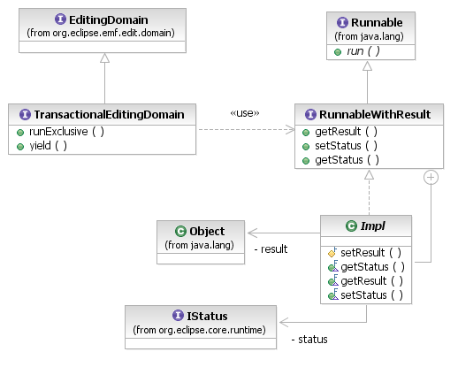
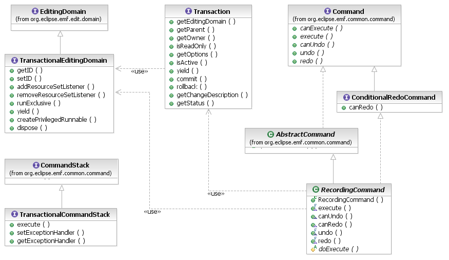

A Transaction is a discrete unit of work in a ResourceSet. This work may be reading and writing the resource set contents or simply reading. Transactions provide model integrity guarantees:
The EMF Transaction API is not a concurrent transactional environment. Transactions on multiple threads execute in strictly serial order.
Transactions are first-class object, maintaining all of the state required to ensure integrity, including recorded changes (for roll-back) and knowledge of which thread owns it. Most clients will never have to interact directly with the transaction object, but only with the editing domain.
The default code generated by EMF is not thread-safe, even for reading. Lazy initialization is not protected by synchronization; multiple concurrent threads could all resolve the same proxy or create the same EList by reading the value of a previously uninitialized feature, resulting in multiple copies of the same data and inconsistent read and/or update experiences.

[as SVG]
The EMF Transaction API provides a solution in the form of read-only transactions. A read-only transaction gives a thread exclusive access to the resource set of a transactional editing domain for the purpose of reading (writing is not permitted). Other threads that wish to read will block in the attempt to start read-only transactions until the reading thread relinquishes its transaction, either by committing it or by other means.
To perform read the contents of a resource set in a read-only transaction, encapsulate the read operation in a Runnable and pass it to the TransactionalEditingDomain.runExclusive() method. The editing waits until it can start a read-only transaction on the current thread, then runs the runnable in that context.
This API works with plain Runnables, but when used with a RunnableWithResult, the runExclusive() method returns the result of the runnable. This is convenient for small read operations that simply need to find an object or compute some value and return it. The RunnableWithResult.Impl inner class is a convenient superclass for these read operations.
TransactionalEditingDomain domain;
// search for the Richmond branch of the library system
Library richmond = (Library) domain.runExclusive(new RunnableWithResult.Impl() {
public void run() {
TreeIterator iter = resource.getAllContents();
while (iter.hasNext()) {
Object next = iter.next();
if (next instanceof Library) {
Library lib = (Library) next;
if ("Richmond Branch".equals(lib.getName()) {
setResult(lib); // found it
break;
}
} else {
iter.prune();
}
}
}});
System.out.println("Found: " + richmond);
A RunnableWithResult also has a status, which indicates any problems in committing the transaction. Ordinarily, read-only transactions can never be rolled back because there are no changes to validate, but it can happen in rare cases of failure of concurrency controls.
The other kind of transaction is a read/write transaction, in which a client thread makes changes to the contents of a resource set. As is recommended in the base EditingDomain of the EMF.Edit framework, all changes to data managed by a transactional editing domain are performed by Commands.

[as SVG]
As an EditingDomain has its CommandStack, so does a TransactionalEditingDomain have its TransactionalCommandStack. All EMF Commands executed on the transactional command stack are provided with read/write transactions in which to make their changes, first waiting if necessary for other reading or writing threads to commit or to relinquish their transactions by other means.
Library richmond = getLibrary("Richmond Branch"); // this would use a read-only transaction
TransactionalEditingDomain domain = getEditingDomain();
CommandStack stack = domain.getCommandStack();
// execute some change, just as in any EMF.Edit application
Command cmd = domain.createCommand(
SetCommand.class,
new CommandParameter(richmond, EXTLibraryPackage.Literals.LIBRARY__ADDRESS, "5600 Perth St."));
stack.execute(cmd);
In the transactional environment, data integrity mechanisms such as validation can cause a read/write transaction to roll back if it would violate integrity constraints. However, the basic command-stack API assumes that commands cannot fail, so it provides no feedback when rollback occurs. The TransactionalCommandStack provides an alternative API that throws RollbackException when the transaction is rolled back or InterruptedException if the transaction cannot even begin because the current thread is interrupted while waiting for the transaction to start. Modifying the example, above:
Library richmond = getLibrary("Richmond Branch"); // this would use a read-only transaction
TransactionalEditingDomain domain = getEditingDomain();
TransactionalCommandStack tstack = (TransactionalCommandStack) domain.getCommandStack();
Command cmd = domain.createCommand(
SetCommand.class,
new CommandParameter(richmond, EXTLibraryPackage.Literals.LIBRARY__ADDRESS, "5600 Perth St."));
try {
tstack.execute(cmd, Collections.EMPTY_MAP);
} catch (InterruptedException e) {
MessageDialog.openError(shell, "Command Failed",
"Interrupted while waiting for a read/write transaction.");
} catch (RollbackException e) {
ErrorDialog.openError(shell, "Command Failed", "Transaction rolled back",
e.getStatus());
}
The overloaded execute() method is distinguished by an options map that supplies transaction options, described elsewhere. The RollbackException, should it occur, provides an IStatus carrying a human-readable reason for the rollback.
The transaction in which a Command is executed records all of the changes that the command performs in case it needs to roll back, undoing those changes. The RecordingCommand class is a convenient command implementation that takes advantage of this recorded information to provide automatic undo/redo support, without the necessity of composing complex nested command structures. This has the additional benefit that the command can determine what changes are required at the time of execution, rather than a priori.
TransactionalCommandStack stack;
stack.execute(new RecordingCommand() {
protected void doExecute() {
Iterator iter = resource.getAllContents();
while (iter.hasNext()) { // changes are determined on-the-fly
Object next = iter.next();
if (next instanceof Library) {
((Library) next).getBooks().add(
EXTLibraryFactory.eINSTANCE.createBook());
}
}
}}, Collections.EMPTY_MAP);
The RecordingCommand requires only that subclasses implement the abstract doExecute() method. The rest of the Command API is implemented automatically, including undo() and redo().
Depending on potential data integrity violations, it is not absolutely certain that, as is assumed by the EMF.Edit framework, any command that was successfully undone can be redone. In consequence, the transaction API defines a ConditionalRedoCommand interface with a canRedo() query. All of the commands defined by the transaction API implement this interface.
Copyright (c) 2006, 2007 IBM Corporation and others. All Rights Reserved.